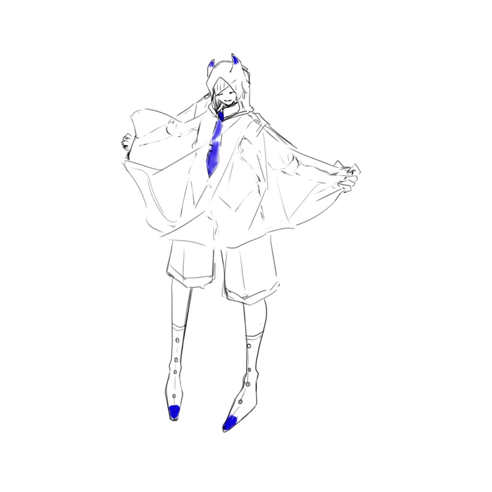
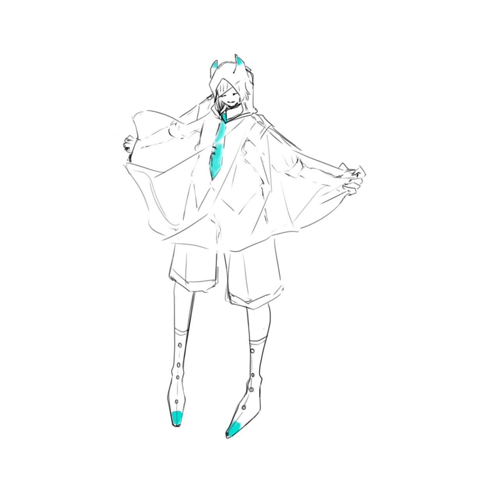
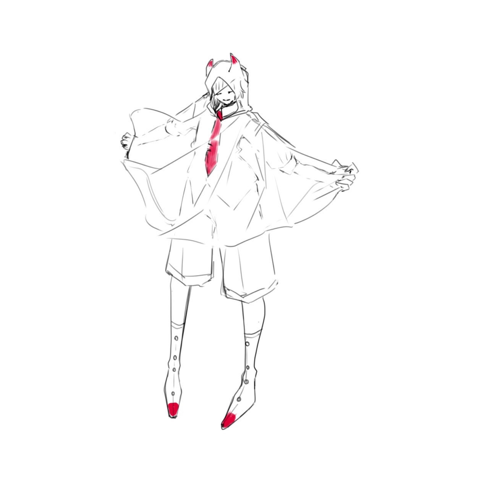
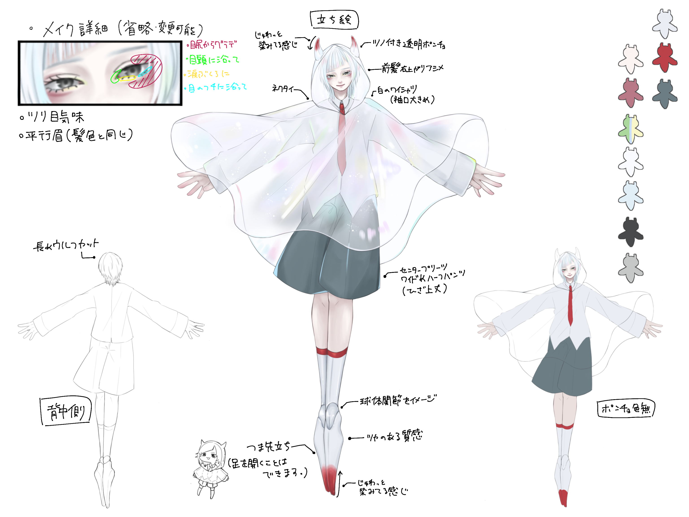
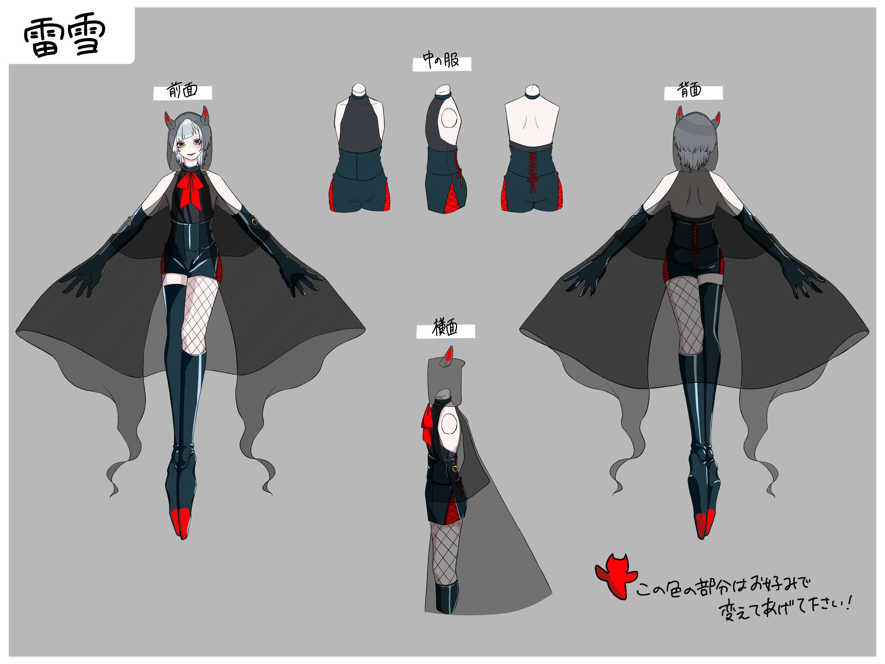
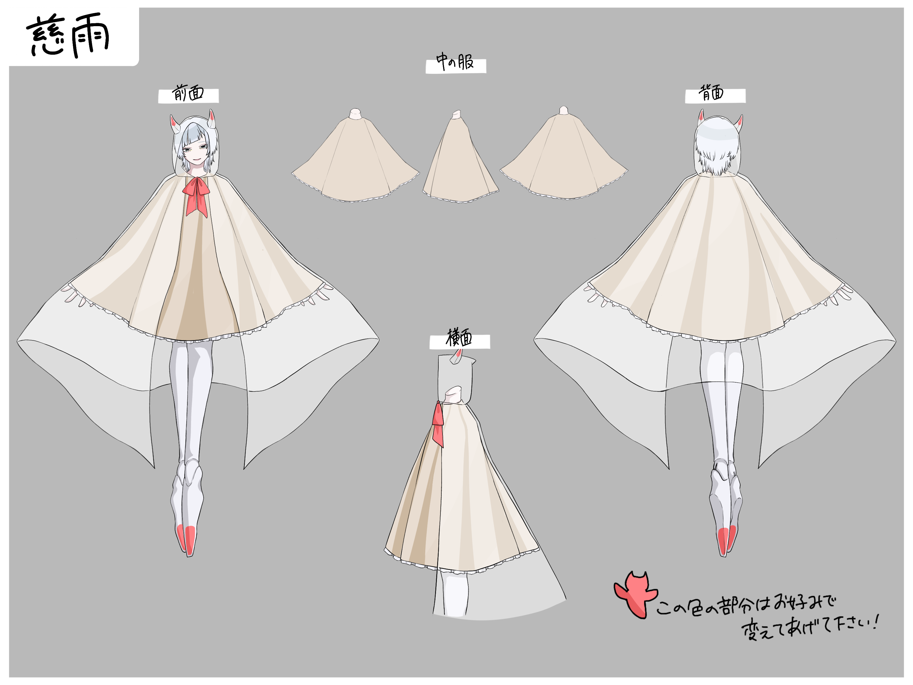

基本プロフィール
| 名前 | 花氷クレオ(かひょう くれお) |
| 年齢 | 不明 |
| 性別 | 不明 |
| 身長 | 165cm |
| 誕生日 | 2月7日 |
| 言葉使い | 敬語 |
| 一人称 | 自分 |
| 好きなもの | 水 |
| 苦手なもの | 暑い場所 |
"花氷クレオ"はライブラリのダウンロード数だけ個体が存在し、それぞれ性格に個体差があります。口調や声、外見に差はありませんのでご安心ください。
また、参考画像のように一部のお色だけご自由に変更可能です(デフォルトカラーは赤色)。マスターの好みや曲調などに合わせて調整してください。
また、参考画像のように一部のお色だけご自由に変更可能です(デフォルトカラーは赤色)。マスターの好みや曲調などに合わせて調整してください。



デザインシート



利用規約はこちらから